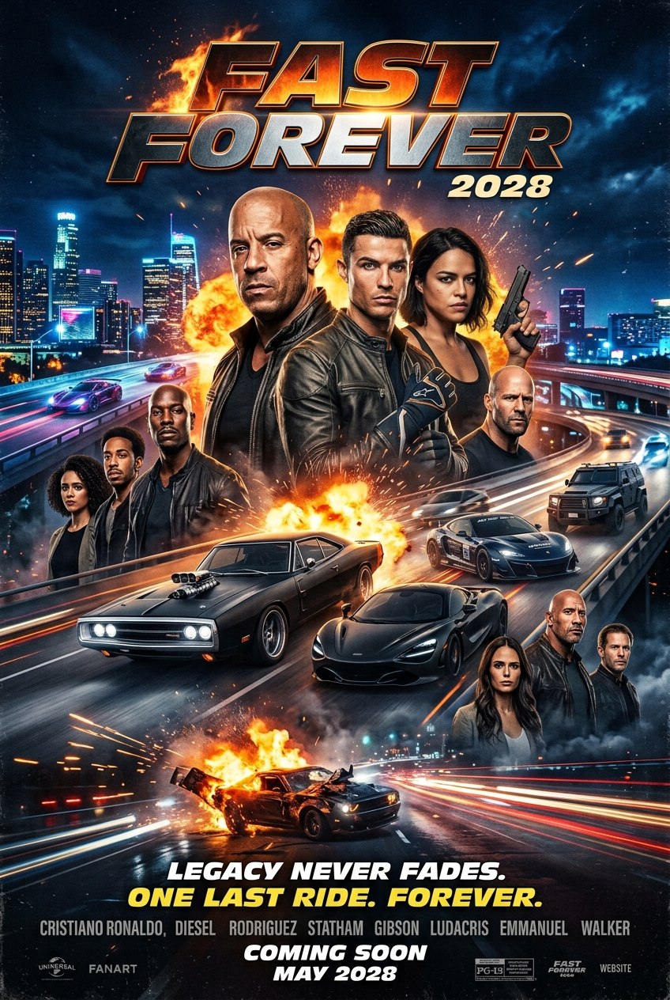

After years of shifting timelines, script revisions, and soaring fan speculation, the long-standing saga of Dominic Toretto and his high-octane family is nearing its final destination. Officially titled Fast Forever, the eleventh and final mainline installment in Universal Pictures' multi-billion-dollar franchise is locked in for a global theatrical release on March 17, 2028. This article discusses the ending of Fast X.
The road to this final lap hasn't been without its twists, but with filming slated for late 2026 under director Louis Leterrier, the finish line is finally in sight.
A return to street racing roots
Following the globe-trotting, gravity-defying escalations of F9 and Fast X, which saw muscle cars launched into orbit and battles against nuclear submarines, Fast Forever is intentionally scaling back the superhero-level spectacle to honor where it all began.
Vin Diesel revealed that the upcoming film will pivot back toward raw car culture, genuine street racing, and the streets of Los Angeles.
"The studio asked for the finale, and I said under three conditions: bring the franchise back to L.A., return to the car culture, and stick to authentic street racing."
Vin Diesel

Written by Mike Lesslie, the script underwent nearly four years of development across multiple writing teams. Diesel publicly shared that reading the finished draft brought him to tears, calling it "the best script I have read in decades" and promising an emotional farewell to Dom Toretto's story.
Star-studded cameo: Cristiano Ronaldo joins the family
Adding even more global star power to the final lap, Vin Diesel confirmed that international football icon Cristiano Ronaldo will make an appearance in Fast Forever.
The production team specifically penned a custom role for Ronaldo in the storyline. The cameo is designed to blend his global sports stardom with the movie's return to high-stakes international street racing and sports car culture, bringing an extra layer of hype to Dom's final chapter.
View this post on Instagram
Storyline and cliffhangers: where we left off
Fast X ended on a series of harrowing cliffhangers that set up the stakes for Fast Forever:
- Dom and Little Brian: Cornered at a Portuguese dam rigged with explosives by Dante Reyes (Jason Momoa). The immediate opening sequence will resolve Dante's primary trap.
- Tej, Roman, Ramsey, and Han: Their plane was shot down over the mountains by Aimes (Alan Ritchson). The crew's immediate survival and rescue will kick off the film's first act.
- Letty and Cipher: Escaped an Antarctic black site aboard a nuclear submarine, forming an uneasy alliance to track down Dante.
- Gisele Yashar (Gal Gadot): Revealed to be alive, piloting the submarine in Antarctica. Expect answers regarding her survival and a reunion with Han.
- Luke Hobbs (Dwayne Johnson): Received a direct threat from Dante in a mid-credits confrontation, marking his re-entry into the mainline story to settle personal scores.
Production timeline
- Mid-2026: Script completion (penned by Mike Lesslie)
- December 2026: Principal photography begins under Louis Leterrier
- Early 2028: Peacock spinoff series premiere
- March 17, 2028: Global theatrical release
Beyond the big screen: expanding the universe
While Fast Forever marks the end of the mainline cinematic narrative, Universal isn't letting off the gas pedal on the franchise as a whole.
Alongside the theatrical release in 2028, Peacock has officially greenlit a live-action scripted television series set within the Fast & Furious universe. Showrun by Mike Daniels (Sons of Anarchy) and Wolfe Coleman, with Vin Diesel executive producing, the series will dive deeper into legacy lore and expand on secondary storylines while the main film franchise takes its victory lap.